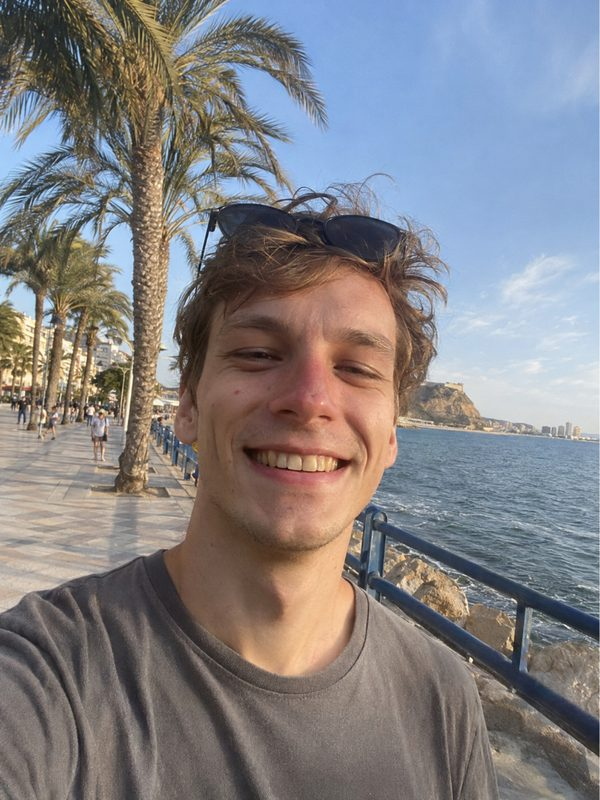

Интервью
Саша, координатор проекта, сам прошел эту процедуру. Он расспросит вас в спокойной обстановке и в вашем темпе. Если станет тяжело, можно сделать перерыв или продолжить в другой день.
Кейс – ваша история преследования с доказательствами, которую вы подаете в полиции Испании. Мы напишем его вместе с вами за 8-10 недель: интервью, текст, доказательства, отчет о стране, перевод и проверка юристом.
Защиту дают не только тем, кого уже задерживали или били. Основанием бывает и обоснованный страх преследования в будущем.
Что из этого есть в вашей истории, разберем на бесплатной оценке шансов. Оценить шансы
Саша, координатор проекта, сам прошел эту процедуру. Он расспросит вас в спокойной обстановке и в вашем темпе. Если станет тяжело, можно сделать перерыв или продолжить в другой день.
Илья Андреев, журналист, делает из расшифровки связную и сильную историю. Он выпускающий редактор и автор книг, больше 4 лет живет в Испании и сам получил защиту. Может задать уточняющие вопросы.
Подскажем, где искать прямые и косвенные доказательства. Добавим отчет о том, как в стране соблюдаются права человека.
Переводим кейс на испанский. Юрист вычитывает финальный текст и обсуждает его с вами на консультации, она входит в стоимость.
PDF до 40 листов А4 с подшитыми доказательствами, готовый к печати или электронной подаче. С ним вы придете на интервью в полиции.
Все четыре шага выше, включая консультацию с юристом по готовому тексту.
Юрист и координатор заранее читают ваш текст. На созвоне на 3 часа разбираем, что усилить и исправить, какие доказательства нужны, а какие нет, и где их искать. Правки вы вносите сами.
Если вы уже были у нас на консультации, ее стоимость вычтем из кейса. Оплата в рублях, евро или USDT.
Историю читает только команда, которая работает с вашим кейсом: координатор, журналист и юрист. Мы не передаем информацию третьим лицам. Кейс подаете вы, и только вы решаете, когда. Общение с нами не нарушает законы России.
Одобрение не может гарантировать никто: решение принимают органы Испании. Мы отвечаем за то, чтобы кейс был подробным, с доказательствами, переведенным и проверенным юристом.
Советы помогли внести правки в кейс. Я подался на убежище неделю назад и теперь нахожусь в стране легально
До крайнего срока оставался ровно месяц. За этот месяц мы собрали все нужные документы и доказательства

Разобрали все возможные подводные камни, которые могут быть на интервью. Правки к кейсу получили тоже очень ценные
Визу дали с первого раза. Ценник абсолютно соотносим с пользой, полученной в процессе
Это реальные люди: отзывы пришли нам после консультаций, работы над кейсом и сопровождения.
Читать все отзывы →
Не нашли ответ? Спросите в боте →
Расскажите, где вы сейчас и что вас интересует.
На бесплатной оценке шансов скажем, подходит ли
вам международная защита и с чего начать.
Общение с нами не нарушает законы РФ. Мы не передаем данные третьим лицам.